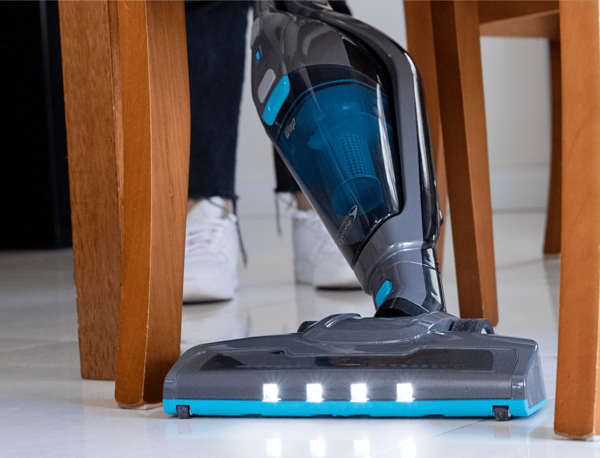

Aspirador de Pó 2 em 1
Wap Eco Rápido

Aspirador de Pó 2 em 1
Wap Eco Rápido
Transforme sua rotina de limpeza com tecnologia em cada movimento!
Equipado com tecnologia Cyclone de última geração, o aspirador de pó vertical combina eficiência e tecnologia para promover uma limpeza mais econômica, livre de fios e sempre ao alcance das mãos.
A combinação entre eficiência e tecnologia para uma limpeza mais econômica e sempre ao alcance das mãos.

Aspirador sem fio
Liberdade total para alcançar os cantos, inclusive debaixo de móveis e em áreas difíceis, com versatilidade.

Modo ECO
Ideal para uso contínuo, você tem recargas rápidas com menos autodescarga para alto rendimento.

Lithium X-Energy
Escolha a potência ideal e tenha até 40 minutos de autonomia para limpezas sem interrupções.
Liberdade para uma
aspira sua casa
limpeza completa! com mais praticidade


Limpeza do seu jeito
Encontre a potência certa entre as velocidades Turbo e Eco para ter controle total da limpeza. São dois modos desenvolvidos para que cada tipo de superfície receba a atenção necessária durante a aspiração, com um recipiente de 700mL de capacidade para sujeira e pó.
Já a tecnologia Eco Mode se ajusta à potência de sucção do aspirador de pó sem fio, maximizando a eficiência da bateria para você usar por até 40 minutos de autonomia, com potência e máxima eficiência.

Garante uma longa vida útil ao aspirador, suportando múltiplos ciclos de carga e descarga com alto rendimento.

Eficiência para suas tarefas diárias! Prolonga o tempo e uso por até 40 minutos de autonomia, para uma limpeza completa.

Potencializa a eficiência do Eco Rápido, pois aumenta o poder de sucção e torna a limpeza mais poderosa do que nunca.

Proporciona liberdade de movimento, transformando a rotina de limpeza em uma experiência rápida.
Autonomia com 2x mais funcionalidade
Bateria Lithium X-Energy oferece uma vida útil mais longa e um desempenho constante ao aspirador de pó vertical WAP, que permite sessões de limpeza longas, sem interrupções.
Além disso, a iluminação frontal de LED facilita o acesso a áreas difíceis e cantos escuros. Seja sob móveis ou em áreas de difícil acesso, não deixa que nenhum vestígio de sujeira escape.
O Filtro HEPA é removível e lavável, retém uma alta quantidade de impurezas, ácaros e fungos do ambiente.
Ao girar com precisão para agarrar e retirar até as partículas mais minúsculas, a escova rotativa deixa pisos e tapetes limpos como novos.
Além de oferecer maior estabilidade, as rodas emborrachadas garantem uma limpeza eficiente e silenciosa, sem marcas no chão.
IDEAL PARA LIMPEZAS EM
Tecnologia para
facilitar sua rotina
Abra caminho para a liberdade de movimento ao aspirar pisos, tapetes e estofados, garantindo que nenhum canto escape do Eco Rápido. Com a tecnologia 180°, agora você alcança a sujeira e a poeira com versatilidade.
Além disso, o filtro HEPA integrado ao aspirador pó portátil retém impurezas, ácaros e fungos dos cômodos. Isso proporciona um ambiente saudável para você e sua família.
Mais tempo para você!
Sua ação de rotação não apenas remove resíduos visíveis, mas também alcança os cantos de difícil acesso. Essa combinação de rotação e aspiração resulta em uma limpeza completa, sem a necessidade de passar várias vezes sobre a mesma área.
Seu design moderno, recarregável e livre de cabos o torna extremamente fácil de usar. Para recarregar, basta conectá-lo à rede elétrica, aproveitando o carregamento BIVOLT do WAP Eco Rápido.
Conheça mais um lançamento
com a qualidade WAP
Redefina o significado de “chão impecável” todos os dias com o Aspirador de Pó sem fio 2 em 1 WAP Eco Rápido: seu parceiro essencial para uma limpeza completa e eficiente.